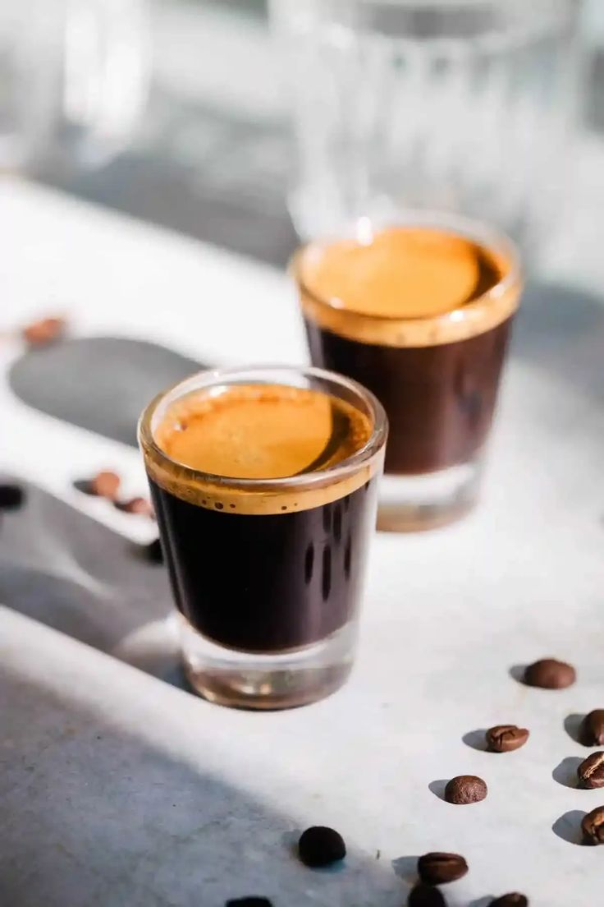
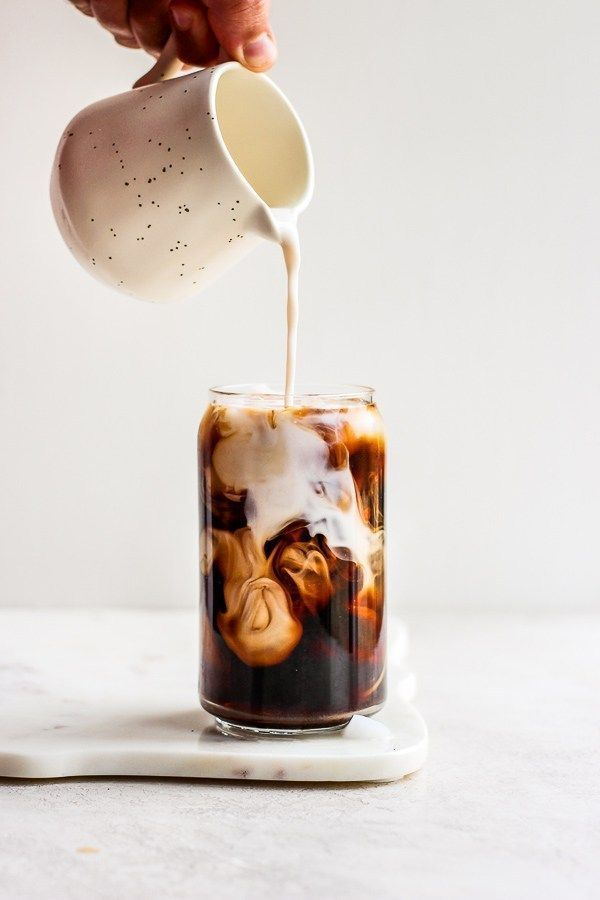
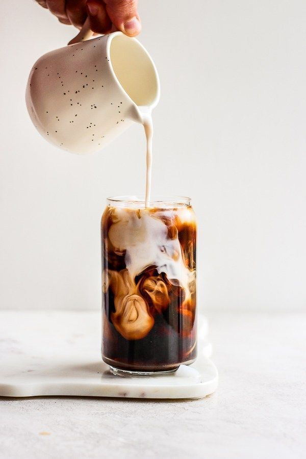
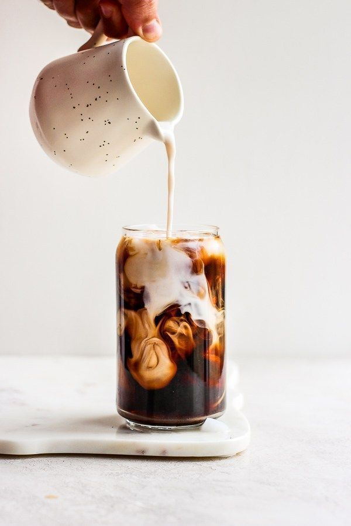
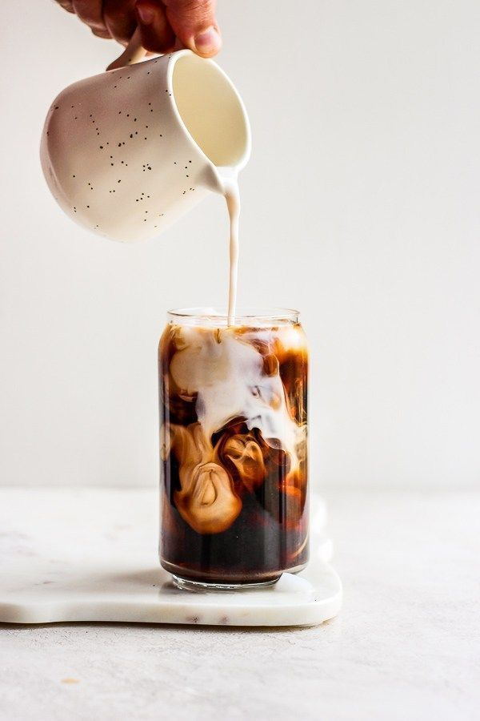

 



Adentre nosso espaço e entregue-se à sinfonia de aromas e sabores que preparamos para você. Cada xícara é uma obra-prima, cuidadosamente elaborada para proporcionar uma experiência única. De blends ousados a opções mais clássicas, nosso café é o cenário perfeito para encontros, reflexões solitárias ou simplesmente para apreciar o prazer de uma boa xícara de café. Seja bem-vindo ao nosso refúgio, onde o sabor encontra o aconchego.